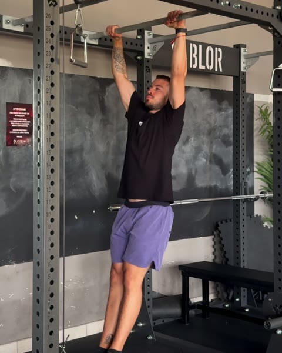
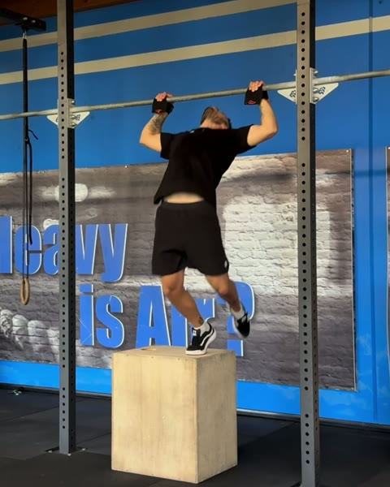
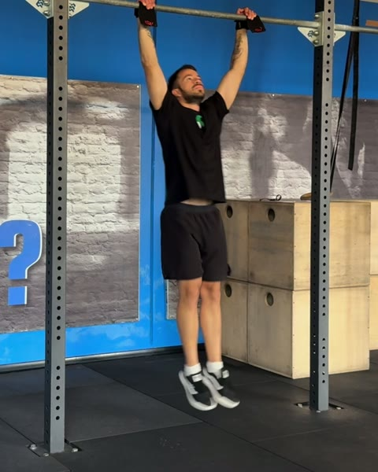
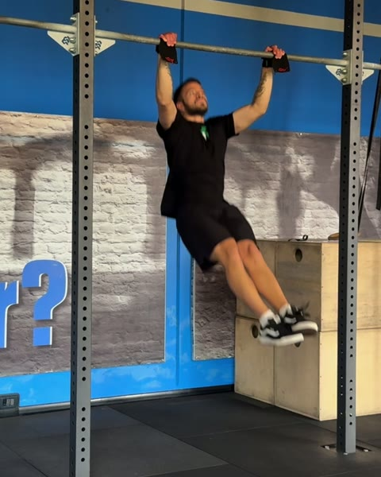
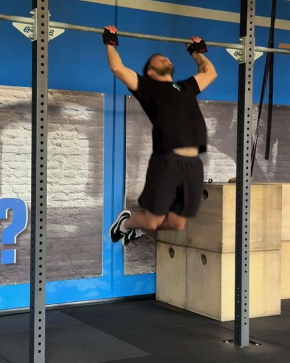
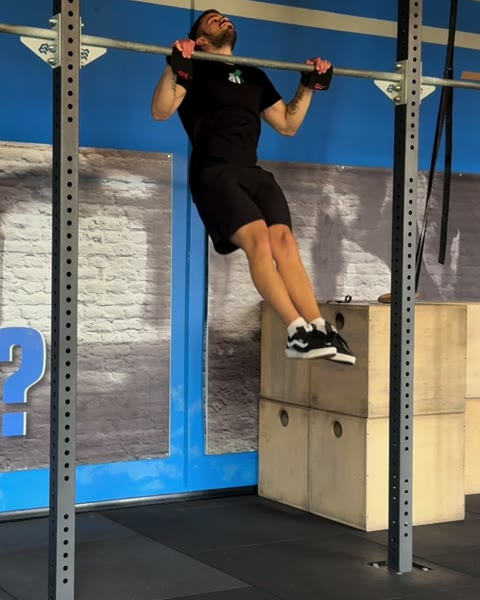
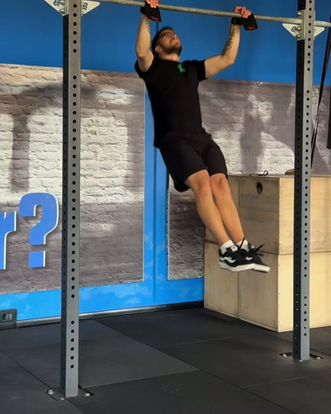
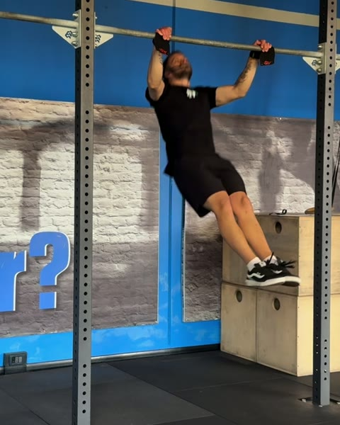

Guida gratuita
Butterfly Pull Up:
da dove parti
Nove test per trovare il tuo gradino. Due giorni da alternare per salirlo.
Filipe Ramos · coach di ginnastica · @coachfiliperamos
Scarica il PDFUn butterfly pull up da solo non esiste. Il movimento è un cerchio: ogni ripetizione cade nella successiva, quindi impararlo e legarlo sono la stessa cosa.
Per questo si parte con un box sotto la sbarra, prima con due piedi e poi con uno, mentre la gamba libera impara il calcio. Poi il box sparisce e il cerchio cresce un pezzo alla volta: un quarto della tirata, metà, tre quarti, tutta. All'inizio con una pausa in alto a ogni ripetizione, che ti dà il tempo di preparare la successiva. Dopo senza pausa, una dietro l'altra. Questa è la scala del programma Butterfly Pull Ups dell'app FAR Training.
1. Il test: trova il tuo gradino
Fai i test in ordine, riposando quanto ti serve tra uno e l'altro. Ti fermi al primo che non passi: quello è il tuo gradino. Ti consiglio di avere già il kipping bar muscle up, così il kip e il butterfly non si confondono.
-

0Strict Pull Up
3 ripetizioni di fila. È il punto di partenza e protegge le spalle. Se non ci arrivi, parti dalla guida dello Strict Pull Up.
-

1One Leg Box Butterfly Pull Up
5 ripetizioni. Un piede sul box, l'altra gamba lavora fuori. Braccia, gambe e cerchio vanno insieme, puliti.
-

21/4 Paused Butterfly Pull Up
5 ripetizioni. Senza box. Disegni un quarto del cerchio e ti fermi un attimo in alto.
-

3Half Paused Butterfly Pull Up
5 ripetizioni. Metà del cerchio, pausa in alto.
-

43/4 Paused Butterfly Pull Up
5 ripetizioni. Tre quarti del cerchio, pausa in alto.
-

5Paused Butterfly Pull Up
3 ripetizioni. Il cerchio intero, pausa in alto.
-
6
1/4 Butterfly Pull Up
5 ripetizioni di fila. Un quarto del cerchio, senza fermarti tra una e l'altra.
-

7Half Butterfly Pull Up
5 ripetizioni di fila. Metà del cerchio, senza pause.
-

83/4 Butterfly Pull Up
5 ripetizioni di fila. Tre quarti del cerchio, senza pause.
-
9
Butterfly Pull Up
3 serie al massimo, 3' di recupero. Il cerchio intero, legato, senza perdere la tecnica.
Li passi tutti? Il butterfly ce l'hai, e il tuo massimo è il numero da cui parte il lavoro di resistenza. Il passo dopo è la guida del Butterfly Chest to Bar.
2. Cosa allenare sul tuo gradino
Due giorni da alternare, tutti di fila: tecnica, forza, tecnica, forza. Tutti e due si aprono con i Butterfly Scapular Pull Up, da disegnare più circolari che puoi. La tecnica aggiunge il lavoro di gambe e il drill del tuo gradino. La forza aggiunge lo Strict Butterfly Pull Up, con il cerchio più grande che riesci, e una tirata strict a percentuale del tuo massimo di ripetizioni. Sono le dosi con cui si parte nell'app. Quando il lavoro diventa facile, rifai il test del tuo gradino.
Gradino 1 Non passi il test 1
| Tecnica | Dose | Recupero |
|---|---|---|
| Butterfly Scapular Pull Up | 3 × 5 | 30" |
| Butterfly Pull Up Leg Work | 5 × 5 | 30" |
| Two Leg Box Butterfly Pull Up | 3 × 10 | 45" |
| Forza | Dose | Recupero |
| Butterfly Scapular Pull Up | 3 × 5 | 30" |
| Strict Butterfly Pull Up | 5 × 3 | 1' |
| Strict Pull Up | 3 × 30% | 1' |
Gradino 2 Non passi il test 2
| Tecnica | Dose | Recupero |
|---|---|---|
| Butterfly Scapular Pull Up | 3 × 5 | 30" |
| Butterfly Pull Up Leg Work | 5 × 7 | 30" |
| One Leg Box Butterfly Pull Up | 3 × 5/lato | 45" |
| Forza | Dose | Recupero |
| Butterfly Scapular Pull Up | 3 × 5 | 30" |
| Strict Butterfly Pull Up | 5 × 4 | 1' |
| Strict Pull Up | 3 × 40% | 1' |
Gradino 3 Non passi il test 3
| Tecnica | Dose | Recupero |
|---|---|---|
| Butterfly Scapular Pull Up | 3 × 6 | 30" |
| Butterfly Pull Up Leg Work | 5 × 9 | 30" |
| 1/4 Paused Butterfly Pull Up | 3 × 5 | 45" |
| Forza | Dose | Recupero |
| Butterfly Scapular Pull Up | 3 × 6 | 30" |
| Strict Butterfly Pull Up | 5 × 5 | 1' |
| Strict Pull Up | 3 × 50% | 1' |
Gradino 4 Non passi il test 4
| Tecnica | Dose | Recupero |
|---|---|---|
| Butterfly Scapular Pull Up | 3 × 6 | 30" |
| Butterfly Pull Up Leg Work | 5 × 10 | 30" |
| Half Paused Butterfly Pull Up | 3 × 5 | 45" |
| Forza | Dose | Recupero |
| Butterfly Scapular Pull Up | 3 × 6 | 30" |
| Strict Butterfly Pull Up | 5 × 5 | 1' |
| Strict Chest to Bar | 3 × 30% | 1' |
Gradino 5 Non passi il test 5
| Tecnica | Dose | Recupero |
|---|---|---|
| Butterfly Scapular Pull Up | 3 × 7 | 30" |
| Butterfly Pull Up Leg Work | 5 × 9 | 30" |
| 3/4 Paused Butterfly Pull Up | 3 × 5 | 45" |
| Forza | Dose | Recupero |
| Butterfly Scapular Pull Up | 3 × 7 | 30" |
| Strict Butterfly Pull Up | 5 × 5 | 1' |
| Strict Chest to Bar | 3 × 35% | 1' |
Gradino 6 Non passi il test 6
| Tecnica | Dose | Recupero |
|---|---|---|
| Butterfly Scapular Pull Up | 3 × 8 | 30" |
| Butterfly Pull Up Leg Work | 5 × 9 | 30" |
| Paused Butterfly Pull Up | 3 × 3 | 45" |
| Forza | Dose | Recupero |
| Butterfly Scapular Pull Up | 3 × 8 | 30" |
| Strict Butterfly Pull Up | 5 × 5 | 1' |
| Strict Chest to Bar | 3 × 40% | 1' |
Gradino 7 Non passi il test 7
| Tecnica | Dose | Recupero |
|---|---|---|
| Butterfly Scapular Pull Up | 3 × 9 | 30" |
| Butterfly Pull Up Leg Work | 3 × 10 | 30" |
| 1/4 Butterfly Pull Up | 5 × 5 | 45" |
| Forza | Dose | Recupero |
| Butterfly Scapular Pull Up | 3 × 9 | 30" |
| Strict Butterfly Pull Up | 5 × 5 | 1' |
| Strict Chest to Bar | 3 × 50% | 1' |
Gradino 8 Non passi il test 8
| Tecnica | Dose | Recupero |
|---|---|---|
| Butterfly Scapular Pull Up | 3 × 9 | 30" |
| Butterfly Pull Up Leg Work | 3 × 10 | 30" |
| Half Butterfly Pull Up | 5 × 5 | 45" |
| Forza | Dose | Recupero |
| Butterfly Scapular Pull Up | 3 × 9 | 30" |
| Strict Butterfly Pull Up | 5 × 5 | 1' |
| Strict Chest to Bar | 3 × 50% | 1' |
Gradino 9 Non passi il test 9
| Tecnica | Dose | Recupero |
|---|---|---|
| Butterfly Scapular Pull Up | 3 × 9 | 30" |
| Butterfly Pull Up Leg Work | 3 × 10 | 30" |
| 3/4 Butterfly Pull Up | 5 × 5 | 45" |
| Forza | Dose | Recupero |
| Butterfly Scapular Pull Up | 3 × 9 | 30" |
| Strict Butterfly Pull Up | 5 × 5 | 1' |
| Strict Chest to Bar | 3 × 50% | 1' |
Il programma completo
Nell'app FAR Training ogni gradino è una fase intera: la progressione delle dosi giorno per giorno, il video di ogni esercizio e il test di fase alla fine. Dopo la nona fase c'è una decima da ripetere, con le percentuali del tuo massimo, un AMRAP, un Tabata e un giorno che chiede il doppio del tuo massimo. Il programma Butterfly Pull Ups arriva sull'app: segui @fartraining per sapere quando esce.
Non sai se hai passato un test? Mandami il video in DM su @coachfiliperamos e ti dico da che gradino partire.
Apri @coachfiliperamos